إشارات الإجبار
17 إشارة، كل وحدة بمعناها وبالصوت.
1

نهاية كل أشكال المنع التي
سبقت الإشارة إليها المفروضة
على جميع أنواع المركبات
2
نهاية منع استعمال المنبّه
الصوتي
3
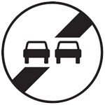
نهاية منع التجاوز
4
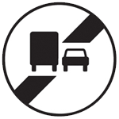
نهاية منع التجاوز بالنسبة لمركبات
نقل البضائع التي تزيد حمولتها
الإجمالية المسموح بها أو وزنها
الإجمالي المأذون به عن 3.5 طن
5
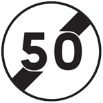
نهاية تحديد السرعة في
50 كلم في الساعة
6
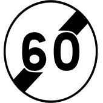
نهاية تحديد السرعة في
60 كلم في الساعة
7
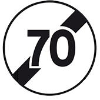
نهاية تحديد السرعة في
70 كلم في الساعة
8
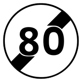
نهاية تحديد السرعة في
80 كلم في الساعة
9
نهاية تحديد السرعة في
100 كلم في الساعة
10
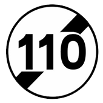
نهاية تحديد السرعة في
110 كلم في الساعة
11
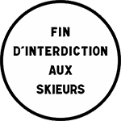
نهاية المنع المذكور طبيعته على
العلامة
12
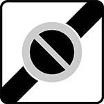
نهاية منطقة التوقف الممنوع
13
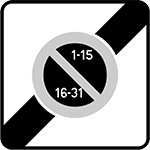
نهاية منطقة ذات التوقف
من جانب واحد بالتناوب
النصف شهري
14
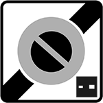
نهاية منطقة ذات التوقف
المحدد زمنيا مع المراقبة
بواسطة قرص
15
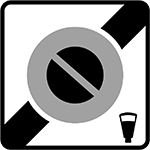
نهاية منطقة التوقف المؤدى عنه
16
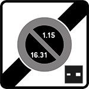
نهاية منطقة ذات التوقف من
جانب واحد بالتناوب النصف
الشهري ولمدة محددة زمنيا
مع المراقبة بواسطة قرص
17
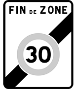
نهاية المنطقة ذات السرعة
المحددة في 30 كلم/س